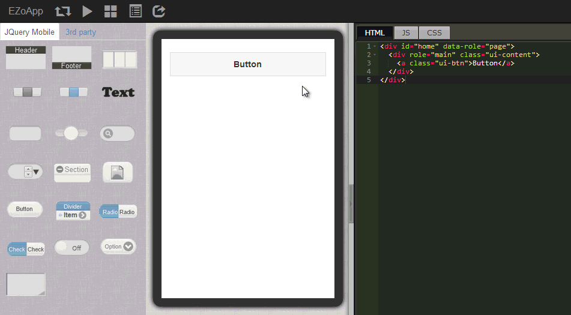
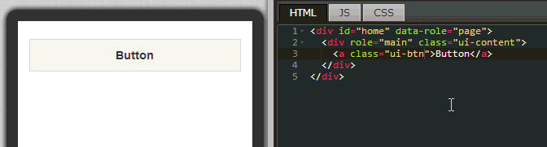

Continuing with button as mentioned in the previous section, we will use button component with the shadow, border, backgrounds and other effects in CSS3 to design beautiful buttons in this section. This section will mainly describe how to use CSS syntax. Even if you are not familiar with related syntax, you are encouraged to try to learn as much as possible. After all, using CSS is so much simpler than writing styles for the apps directly in Java or Object C. Trust you can all create beautiful buttons!
Link of example:
Basic component hands-on practice - creating customized buttons
Here we provide a few good CSS websites for your reference:
CSS - W3School ( Complete online tutorial for CSS )
CSS3 Maker ( Overseas website that quickly generates CSS3 syntax and effects - 1 )
CSS3 Generator ( Overseas website that quickly generates CSS3 syntax and effects - 2 )
Because CSS had become a trend, EZoApp will also use CSS extensively to edit layout. We hope that in addition to learning EZoApp, you will also learn CSS!

We will directly drag a button component from the left side into the editing screen to generate a button automatically.

When you click on the button in the editing area, you will see a few small icons on the upper-right corner. These icons are: "green plus sign" for duplicating and adding a copy of the component; "red cross" for deleting the component; and "black upper arrow" for selecting parent component. If we want to quickly duplicate a button, just click on the green plus sign. A new button will be created automatically.

When a button is clicked, we can use its attribute panel to adjust its attributes. After attributes are adjusted, corresponding style names will be added into the program code. Here we can set up the position, size and other attributes for the button. Other more advanced attributes will be adjusted using CSS. Thirteen basic styles for buttons in the example are listed below.
<a class="ui-btn"></a>
<a class="ui-btn ui-mini">Button</a>
<a class="ui-btn">Button1</a>
<a class="ui-btn">Button2</a>
<a class="ui-btn"></a>
<a class="ui-btn ui-mini ui-btn-icon-top ui-icon-delete">Button</a>
<a class="ui-btn ui-btn-icon-top ui-icon-delete">Button</a>
<a class="ui-btn ui-icon-delete ui-btn-icon-right">Button</a>
<a class="ui-btn"></a>
<a class="ui-btn"></a>
<a class="ui-btn"></a>
<a class="ui-btn"></a>
<a class="ui-btn"></a>

After placing button components in the editing area, we will finally use CSS to edit their styles. In addition to setting up length and width, we can also use attributes below to set up styles for buttons:
-webkit-box-radius: enter a number following it to make the four corners of the button round (applicable to Chrome; For Firefox, change it to -moz-box-radius; and for IE, change it to box-radius). For example:
-webkit-border-radius: 20px;
-webkit-box-shadow: enter a number following it to set up the shadow effect for the button (applicable to Chrome; For Firefox, change it to -moz-box-shadow; and for IE, change it to box-shadow). For example:
-webkit-box-shadow: inset #ddd 0 0 10px; //内阴影
-webkit-box-shadow: #ddd 0 0 10px;
background: you can enter a background image; however, because of the default value of jQuery Mobile component, you must add "!important" to display it correctly. For example:
background: url(img url) center center no-repeat!important;
display: because buttons are block attributes themselves, if you want to arrange buttons one next to another, the easiest way is to adjust "display". For example:
display: inline-block;

We listed several CSS styles above that deserve particularly attention. The others are actually basic CSS. You can write the code yourself and see the effect immediately. Isn't it quite convenient and quick?
The few good CSS websites are listed here again for your reference:
CSS - W3School (Complete online tutorial for CSS)
CSS3 Maker (Overseas website that quickly generates CSS3 syntax and effects - 1)
CSS3 Generator (Overseas website that quickly generates CSS3 syntax and effects - 2)
Link of example:
Basic component hands-on practice - creating customized buttons